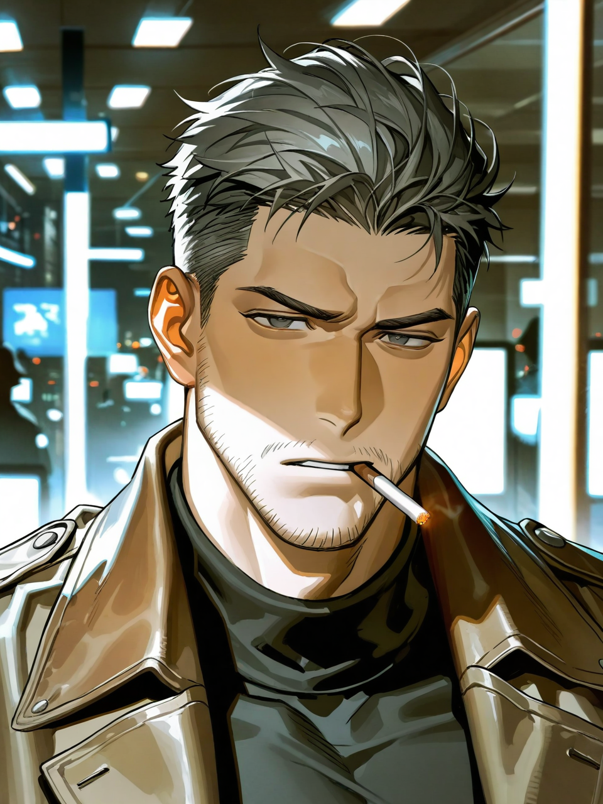
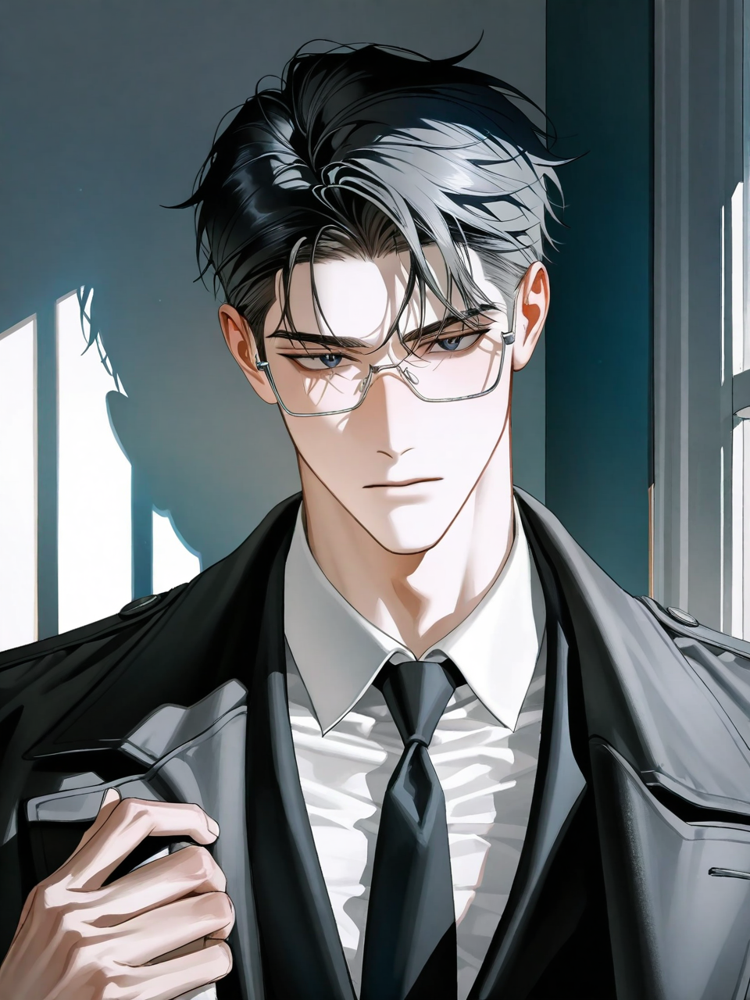

윤태식
경감 · Team Leader
7년 전, 범죄사건에 연루 된 아내 이서하를 잃은 인물. 어린 딸(7살) 윤서린을 두고 있다. 딸 앞에선 절대 금연.
하진시 경찰청 미제사건 전담 TF.
단서도, 용의자도, 결론도 없는 사건을 다시 0에서 추적한다.

7년 전, 범죄사건에 연루 된 아내 이서하를 잃은 인물. 어린 딸(7살) 윤서린을 두고 있다. 딸 앞에선 절대 금연.
강력수사 1팀 출신 형사. 현장 감각이 좋고 몸으로 먼저 움직이는 타입이다. 분위기 메이커지만, 태식과 도현이 부딪힐 때마다 그 사이에서 가장 난처해지는 사람도 결국 지환이다.

정석 엘리트 코스를 밟아온 분석가. 감정에 휩쓸린 수사를 경계하며, 사건에 매달리는 태식을 자주 제지한다. 이해하지 못하는 것은 아니지만, 언제나 가장 마지막까지 거리를 유지하는 타입이다.